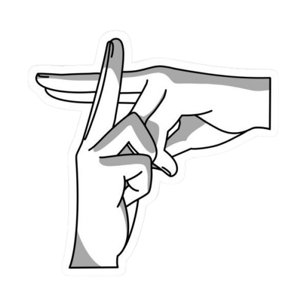

Shadow Clone Jutsu
Make the hand sign at your webcam. Everything runs in your browser; no video leaves your device.
Your browser will ask for camera permission.
Press Start to begin.
Spawn clones

Release clones
Keys
S spawn · C dismiss · D debug · I flip cutout · [ ] threshold